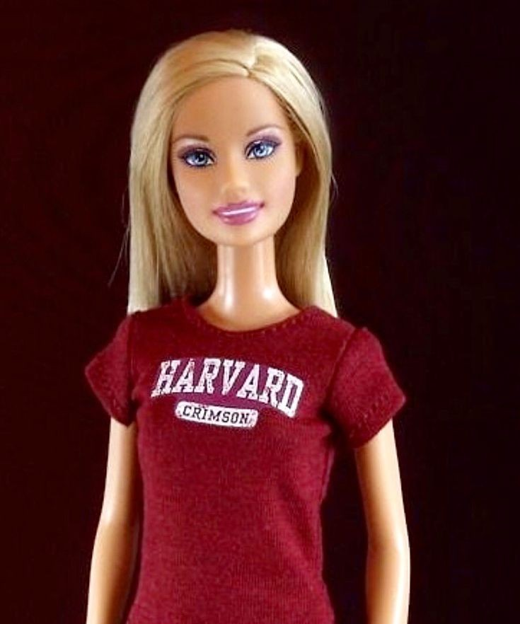
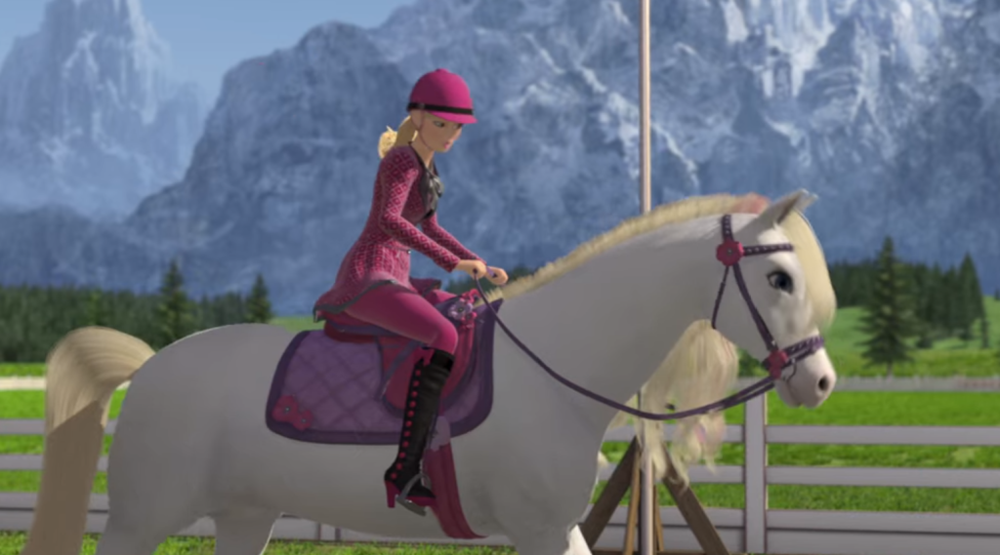

Harvard
2022-2026
Jag slutförde nyligen min utbildning inom rymdteknik på Harvard i
Massachusetts. Det har varit en intensiv och givande tid där jag
fått kombinera teoretisk fördjupning med praktisk tillämpning inom
rymdrelaterade teknologier. Nu är jag redo att ta nästa steg och
bidra med mina erfarenheter i spännande framtida uppdrag

Handler Arts Academy
2021-2022
Efter att ha slutfört min utbildning i scenkonst på Handler Arts
Academy i New York City bär jag med mig både en stark konstnärlig
grund och värdefull erfarenhet av att arbeta i en kreativ och
intensiv miljö. Utbildningen har utvecklat mitt scenspråk och min
samarbetsförmåga, något jag nu är redo att omsätta i nya spännande
produktioner.

Alpine Riding Academy
2013-2014
Utbildad inom ridning vid Alpine Riding Academy i de schweiziska
alperna. Med en bred grund i klassisk ridlära, hästvälfärd och
utmanande terrängridning brinner jag för hållbar utveckling för både
häst och ryttare.

Princess Charm School
2011-2013
Utbildad vid den anrika prinsesskolan i Gardania med fokus på
kunglig etikett, diplomati och hovtraditioner. Med en stark känsla
för ansvar och elegans är jag redo att möta nya äventyr och uppdrag
i riket.